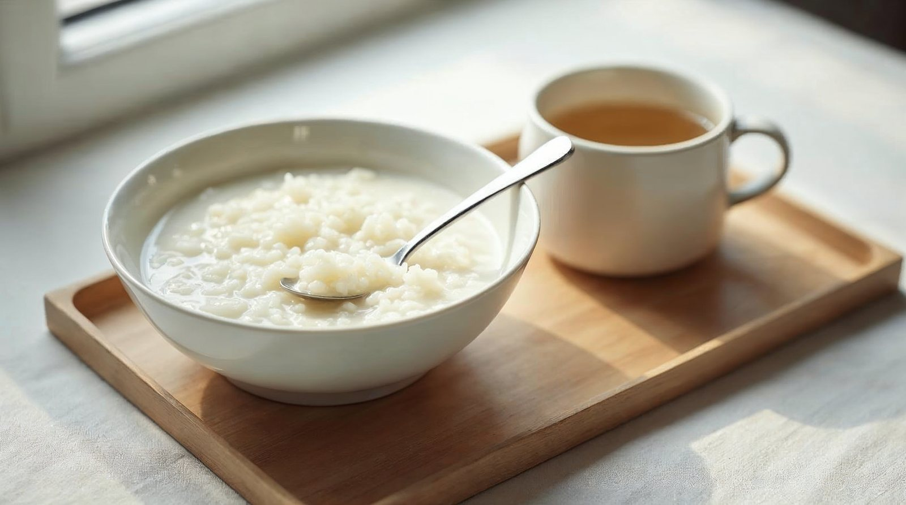
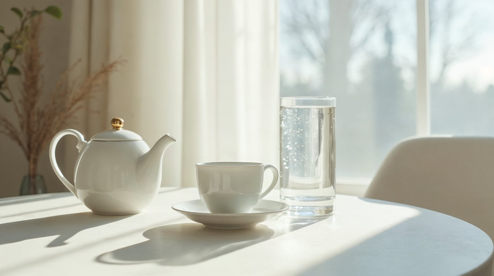
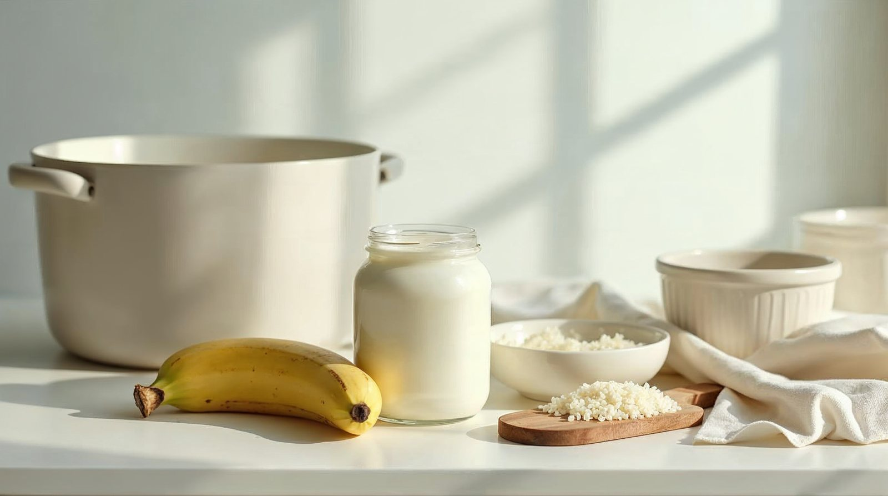
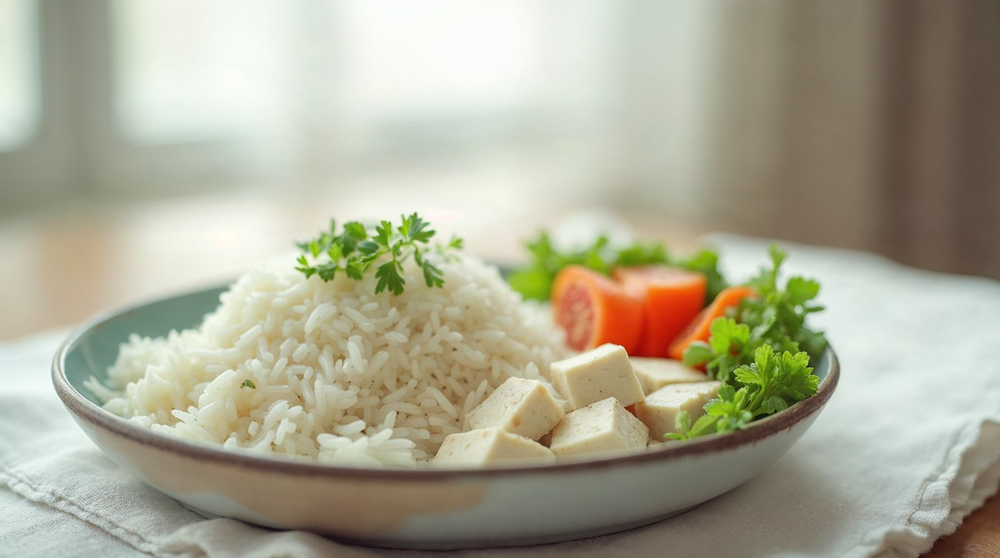

이종호 한의사 감수좋은꿈참사랑한의원 대표원장 (한의사 면허번호 19769)발행 2026-11-26 · 수정 2026-11-26
이 글의 차례
열이 내리고 화장실을 들락거리던 며칠이 지나자 겨우 살 것 같습니다. 죽을 며칠 먹다가 오랜만에 김치찌개 한 숟가락을 떴는데, 한 시간도 안 되어 배가 꾸르륵거리며 다시 화장실로 달려갑니다. 장염은 끝났다는데 내 장은 아직 끝나지 않은 것 같습니다.
장염을 앓고 난 뒤에는 큰 고비가 지나간 뒤에도 장이 한동안 예민하게 남아 있는 일이 흔합니다. 변이 묽었다 굳었다 하고, 조금만 먹어도 배가 빵빵하며, 기운이 바닥에 붙은 듯한 날이 이어지기도 합니다. 저는 이 시기를 장이 다시 자리를 잡아 가는 회복기로 봅니다.
진료실에서는 장염은 다 나았다는데 왜 아직도 이러냐는 말씀을 자주 듣습니다. 병원에서 들은 말과 내 몸이 느끼는 것이 달라 답답하셨을 겁니다. 회복기는 검사지에 잘 드러나지 않아서, 오히려 당사자가 가장 외롭게 지나가는 시간이기도 합니다.
이 글은 장염의 급한 시기를 지나 회복기에 들어선 분들을 위한 글입니다. 장염이 지나간 자리를 어떻게 이해하면 좋을지, 식사를 어떤 순서로 되돌리면 좋을지, 한의원에서는 무엇을 함께 살피는지 차례로 말씀드리겠습니다.
왜 장염이 지나간 뒤에도 장이 한동안 예민할까요
장 안쪽은 아주 얇은 점막으로 덮여 있고, 그 점막이 음식물의 영양과 물을 흡수합니다. 장염을 앓는 동안 이 점막은 세균이나 바이러스와 싸우느라 지치고 군데군데 상하게 됩니다. 싸움이 끝났다고 해서 점막이 그날 바로 예전 모습으로 돌아오지는 않습니다.
점막이 회복되는 동안에는 소화 효소가 덜 나오기도 하고, 물을 흡수하는 힘도 약해집니다. 그래서 평소에는 아무렇지 않던 우유나 기름진 음식이 갑자기 부담스러워지고, 변이 묽게 나오는 날이 이어지기도 합니다. 장 속에 함께 사는 세균의 균형이 흔들린 것도 한몫을 합니다.
장은 신경이 아주 많이 모여 있는 곳이기도 합니다. 며칠 동안 심하게 아팠던 기억이 남으면 장의 감각이 한동안 예민해져, 작은 가스에도 배가 아프게 느껴질 수 있습니다. 대부분은 몇 주에 걸쳐 차츰 가라앉지만, 몇 달씩 이어지는 분도 계십니다.
한의학에서는 이런 모습을 비위(脾胃)의 기운이 크게 상한 뒤 아직 제자리를 찾지 못한 상태로 보아 왔습니다. 설사가 오래가며 몸이 차고 기운이 없으면 비위가 허해졌다고 하고, 배가 묵직하고 혀에 끈적한 태가 끼면 습(濕)이 남아 있다고 표현합니다. 그래서 저는 장만이 아니라 몸 전체의 기운을 함께 봅니다.

회복기 장의 모습, 이렇게 나눠 봅니다
장염 뒤에 남는 불편은 사람마다 모양이 다릅니다. 어떤 모양인지 알아 두면 생활에서 무엇을 먼저 조심할지 정하기 쉽습니다.
묽은 변이 이어지는 경우
하루 두세 번 무른 변을 보고, 먹고 나면 곧 화장실에 가고 싶어지는 모습입니다. 점막이 아직 물을 잘 흡수하지 못하는 시기에 흔합니다. 이때는 무엇을 먹었을 때 변이 더 묽어지는지 적어 보는 것이 출발점입니다.
더부룩함과 가스가 많은 경우
변은 어느 정도 돌아왔는데 식사 뒤 배가 빵빵하게 부풀고 가스가 자주 차는 모습입니다. 장 속 세균의 균형이 흔들려 음식이 발효되며 가스가 많아졌을 수 있습니다. 콩, 양파, 우유, 단 음료 같은 음식에 유독 반응하는 분이 많습니다.
기운이 바닥에 붙은 경우
배는 많이 편해졌는데 몸이 무겁고, 입맛이 돌아오지 않으며, 오후만 되면 눕고 싶은 모습입니다. 며칠 제대로 먹지 못하고 물을 많이 잃은 뒤라 몸 전체가 지친 상태입니다. 이때는 장보다 식사량과 잠을 먼저 챙깁니다.
설사와 변비가 번갈아 오는 경우
장염 이후 몇 달이 지나도 배가 자주 아프고 설사와 변비가 오락가락한다면, 장이 예민한 상태로 굳어 가는 것은 아닌지 살핍니다. 장염 뒤에 과민성 장 증후군과 비슷한 모습이 이어지는 경우가 있다고 알려져 있어, 이때는 조금 더 긴 호흡으로 함께 봅니다.
식사는 어떤 순서로 되돌릴까요
회복기에 가장 많이 받는 질문은 이제 무엇을 먹어도 되느냐는 것입니다. 저는 메뉴보다 순서를 먼저 말씀드립니다. 장이 일을 다시 배우는 시기라고 생각하시고, 쉬운 일부터 하나씩 맡겨 보세요.
처음에는 흰죽이나 미음, 부드러운 쌀밥, 삶은 감자, 바나나처럼 장이 쉽게 다룰 수 있는 음식부터 시작합니다. 양은 평소의 반쯤으로 하고, 하루 세 끼를 네다섯 번으로 나누어 조금씩 드시는 편이 장에 부담이 적습니다.
그다음에는 계란찜, 두부, 흰살생선, 기름기를 걷어 낸 닭고기처럼 부드러운 단백질을 더합니다. 익힌 애호박이나 당근처럼 섬유질이 부드러운 채소도 이때 조금씩 넣어 봅니다. 하나를 더한 뒤 하루 이틀 지켜보고, 괜찮으면 다음으로 넘어갑니다.
기름진 음식, 튀김, 매운 음식, 우유와 생크림, 날채소와 생과일, 술은 가장 나중에 되돌립니다. 이 음식들은 장이 평소보다 많은 일을 해야 하는 것들이라, 회복이 덜 된 장에는 버거울 수 있습니다. 특히 우유는 장염 뒤 한동안 소화가 어려워지는 분이 꽤 있습니다.
찬 음식과 찬 음료도 천천히 되돌리시길 권합니다. 얼음물이나 아이스커피를 마시면 곧바로 배가 꾸르륵거린다는 분이 많습니다. 미지근한 물과 따뜻한 국물로 속을 데워 가며 장이 다시 일할 준비를 하도록 돕는 것이 좋습니다.

물은 얼마나, 어떻게 마실까요
설사를 하는 동안 몸은 생각보다 많은 물과 염분을 잃습니다. 회복기에 기운이 없고 머리가 띵한 이유 가운데 하나가 이것입니다. 그래서 회복기에도 물을 꾸준히 챙겨 드시는 것이 중요합니다.
한 번에 많이 마시기보다 조금씩 자주 드시는 편이 장에 부담이 적습니다. 미지근한 물, 보리차, 맑은 국물이 무난합니다. 설사가 아직 잦다면 약국에서 파는 경구 수액을 쓰기도 하는데, 이는 약사나 의사와 상의해 정하시는 것이 좋습니다.
단 음료나 과일 주스는 오히려 설사를 부추길 수 있어 조심합니다. 이온 음료도 당분이 많은 제품이 있어 물에 섞어 연하게 드시는 분도 계십니다. 소변 색이 옅은 노란색으로 돌아오는지를 보면 물이 부족한지 아닌지를 대략 짐작할 수 있습니다.
회복을 더디게 만드는 습관들
회복기에 자주 보는 실수는 배가 조금 편해지자마자 그동안 못 먹은 것을 한꺼번에 되찾으려는 것입니다. 며칠 참았던 치킨이나 라면, 맥주를 한 번에 드시면 겨우 자리를 잡던 장이 다시 놀라기 쉽습니다.
반대로 너무 겁이 나서 죽과 물만 몇 주씩 이어 가는 분도 계십니다. 이렇게 되면 장은 편할지 몰라도 몸은 기운을 채우지 못해 회복이 더뎌집니다. 장에게 쉬운 일부터 조금씩 맡기며 양과 종류를 넓혀 가는 중간 길이 필요합니다.
잠이 모자란 것도 회복을 늦춥니다. 장염을 앓는 동안 밀린 일을 처리하느라 밤늦게까지 깨어 있으면, 몸은 장을 돌볼 힘을 남겨 두지 못합니다. 회복기 한두 주만큼은 평소보다 일찍 눕는 것을 식사만큼 중요하게 여겨 주세요.
예를 들면 이런 경우입니다
실제 어느 분의 사연이 아니라, 진료실에서 자주 보는 모습을 바탕으로 그려 본 장면입니다.
예를 들어 장염이 지나간 다음 날부터 회식 자리에 나가 평소처럼 고기와 술을 드신 직장인이라면, 그 뒤로 변이 계속 묽다고 하십니다. 이럴 때는 장이 아직 회복할 틈을 얻지 못한 경우가 많아, 일주일쯤 식사 순서를 처음부터 다시 밟아 보자고 말씀드립니다.
아이 장염을 간호하다 함께 옮은 보호자라면, 아이를 챙기느라 자신의 식사와 잠은 뒷전이 된 경우가 많습니다. 배보다 피로가 먼저 보일 때가 있어, 회복기 식사와 함께 쉬는 시간을 어떻게 낼지 같이 이야기합니다.
먼저 이렇게 여쭙니다
- 장염을 앓은 때가 언제이고, 설사와 열, 구토는 며칠 갔나요?
- 그때 병원에서 받은 약이 있나요? 항생제나 지사제를 드셨나요?
- 지금 대변은 하루 몇 번, 어떤 모양인가요?
- 어떤 음식을 먹었을 때 배가 더 불편해지나요?
- 입맛과 기운, 잠은 장염 전과 비교해 어떤가요?
- 손발과 배가 찬 편인가요, 찬 음료를 드시면 어떤가요?
함께 장염을 앓은 가족이 있었는지, 해외여행이나 단체 식사 뒤였는지도 여쭙습니다. 비슷한 시기에 여러 사람이 함께 탈이 났다면 원인을 짐작하는 데 도움이 됩니다.

일상에서 먼저 해 볼 수 있는 것
회복기 장을 돌보는 일은 특별한 비법보다 기본을 꾸준히 지키는 쪽에 가깝습니다. 아래 가운데 지금 내게 가장 쉬운 것부터 하나 골라 보세요.
- 하루 세 끼를 네다섯 번으로 나눠 조금씩 먹기
- 새 음식을 더할 때는 하루에 하나씩, 반응을 보고 넘어가기
- 찬 음료 대신 미지근한 물과 따뜻한 국물로 속을 데우기
- 우유, 튀김, 술, 매운 음식은 변이 자리를 잡은 뒤에 되돌리기
- 밤에 일찍 눕고, 낮에 피곤하면 십여 분이라도 누워 쉬기
- 배를 따뜻한 손이나 찜질팩으로 데우며 숨을 길게 내쉬기
화장실에 다녀온 뒤에는 손을 비누로 꼼꼼히 씻는 것도 잊지 마세요. 집안에서 장염이 돌고 돌며 다시 옮는 경우가 있습니다. 수건을 따로 쓰고, 문손잡이나 수도꼭지를 자주 닦는 것도 도움이 됩니다.
조급한 마음도 내려놓으시길 바랍니다. 며칠 앓은 장이 제자리를 찾는 데에는 앓았던 기간보다 더 긴 시간이 걸리는 경우가 많습니다. 어제보다 화장실 횟수가 한 번 줄었다면 그것으로 충분히 잘 가고 있는 것입니다.
한의원에서 함께 살필 수 있는 경우
- 장염이 지나간 지 몇 주가 지났는데도 묽은 변과 복통이 이어지는 경우
- 배는 편해졌지만 입맛과 기운이 돌아오지 않는 경우
- 찬 음식이나 우유를 먹으면 곧바로 배가 탈 나는 경우
- 장염 이후 설사와 변비가 번갈아 오며 배가 자주 아픈 경우
좋은꿈참사랑한의원에 처음 오시면 먼저 양손을 올려 달라고 말씀드리고 맥을 짚습니다. 맥을 짚으며 이야기를 듣고 혀를 보며, 배를 눌러 차가운 자리와 단단한 자리, 아픈 자리를 확인합니다. 대변의 모양과 횟수, 먹은 것과의 관계를 함께 정리합니다.
그 뒤 진찰한 내용을 바탕으로 침이나 온열 관리, 한약 상담 가운데 지금 상태에 맞는 것을 정합니다. 몸이 차고 기운이 빠진 경우와 배가 묵직하고 더부룩한 경우는 살피는 방향이 다릅니다. 한약을 상의할 때는 지금 드시는 약을 모두 확인하고 신중하게 정합니다.
설사가 오래가는 등 내과 검사가 필요해 보이는 모습이 있으면 내과 진료를 함께 권합니다. 내과에서 받은 약은 처방한 의사와 상의 없이 멈추지 않으시도록 말씀드립니다. 두 진료가 서로 겹치지 않도록 드시는 약과 검사 결과를 함께 놓고 봅니다.
이렇게 기록해 오시면 상담이 쉬워집니다
회복기의 장은 하루하루 모습이 달라서, 짧은 기록이 큰 도움이 됩니다. 1~2주만 적어 보세요.
- 장염을 앓은 날짜와 그때의 증상, 받은 약
- 하루 대변 횟수와 모양(물 같음, 무름, 보통, 굳음)
- 먹은 음식과 배가 불편했던 시각
- 물과 음료를 마신 양, 찬 음료를 마신 날
- 잠든 시각과 깬 시각, 낮의 기운
빠진 날이 있어도 괜찮습니다. 적어 오신 줄 가운데 눈에 띄는 날부터 함께 들여다보겠습니다. 휴대폰 메모에 한 줄씩 적어 오셔도 충분합니다.

장이 다시 제 걸음을 찾을 때까지
장염은 며칠이면 지나가지만, 그 며칠 동안 장은 많은 것을 잃습니다. 점막도, 함께 사는 세균도, 몸의 물과 기운도 조금씩 다시 채워야 합니다. 그래서 회복기는 짧은 병의 긴 뒷모습이라고 생각합니다.
그 시간을 잘 지나가는 방법은 의외로 단순합니다. 조금씩 자주 먹고, 따뜻하게 지내고, 새 음식은 하나씩 더하며, 충분히 쉬는 것입니다. 이번 주에는 그 가운데 하나만 골라 지켜 보세요. 다음에 오시면 지난 일주일 동안 장이 어떻게 지냈는지부터 여쭙겠습니다.
이런 증상은 먼저 확인이 필요합니다
- 변에 피가 섞이거나 검게 나오는 경우, 높은 열이 이어지거나 배가 점점 심하게 아픈 경우
- 물조차 넘기지 못하거나, 소변이 거의 나오지 않거나, 일어서기 힘들 만큼 어지러운 경우
이런 신호가 있으면 한의원보다 가까운 병원이나 응급실을 먼저 찾으세요.
함께 읽으면 좋은 글
- 배가 자주 아프고 설사·변비가 반복되는 과민성 장 증후군은 어떻게 살피나요?
- 찬 음식이나 찬 음료를 먹으면 배가 아플 때는 어떻게 하나요?
- 소화가 오래 불편할 때 한의원에서는 무엇을 먼저 묻나요?
- 자주 체한다는 느낌, 식체나 담적이라는 말은 무엇을 뜻하고 어떻게 살피나요?
- 복진은 무엇이고 한의원에서 배를 만져 보는 이유는 무엇인가요?

여쭙는 것
- 장염을 앓은 때가 언제이고, 설사와 열, 구토는 며칠 갔나요?
- 그때 병원에서 받은 약이 있나요? 항생제나 지사제를 드셨나요?
- 지금 대변은 하루 몇 번, 어떤 모양인가요?
생활에서 해 볼 것
- 하루 세 끼를 네다섯 번으로 나눠 조금씩 먹기
- 새 음식을 더할 때는 하루에 하나씩, 반응을 보고 넘어가기
- 찬 음료 대신 미지근한 물과 따뜻한 국물로 속을 데우기
한의원에서 함께 살필 것
- 장염이 지나간 지 몇 주가 지났는데도 묽은 변과 복통이 이어지는 경우
- 배는 편해졌지만 입맛과 기운이 돌아오지 않는 경우
- 찬 음식이나 우유를 먹으면 곧바로 배가 탈 나는 경우
먼저 확인이 필요한 신호
- 변에 피가 섞이거나 검게 나오는 경우, 높은 열이 이어지거나 배가 점점 심하게 아픈…
- 물조차 넘기지 못하거나, 소변이 거의 나오지 않거나, 일어서기 힘들 만큼 어지러운 경우
한눈에 보는 표
| 구분 | 핵심 |
|---|---|
| 여쭙는 것 | 장염을 앓은 때가 언제이고, 설사와 열, 구토는 며칠 갔나요? 그때 병원에서 받은 약이 있나요? 항생제나 지사제를 드셨나요? |
| 생활에서 해 볼 것 | 하루 세 끼를 네다섯 번으로 나눠 조금씩 먹기 새 음식을 더할 때는 하루에 하나씩, 반응을 보고 넘어가기 |
| 한의원에서 함께 살필 것 | 장염이 지나간 지 몇 주가 지났는데도 묽은 변과 복통이 이어지는 경우 배는 편해졌지만 입맛과 기운이 돌아오지 않는 경우 |
| 먼저 확인이 필요한 신호 | 변에 피가 섞이거나 검게 나오는 경우, 높은 열이 이어지거나 배가 점점 심하게 아픈 경우 물조차 넘기지 못하거나, 소변이 거의 나오지 않거나, 일어서기 힘들 만큼 어지러운 경우 |
자주 묻는 질문
장염 뒤에 변이 묽은 것은 얼마나 가나요?
사람마다 다르지만 몇 주에 걸쳐 차츰 자리를 잡는 경우가 많습니다. 한 달이 넘도록 묽은 변과 복통이 이어지거나 체중이 줄면 내과 진료와 함께 살펴보시길 권합니다.
회복기에 유산균을 먹어도 되나요?
드셔 보는 분이 많지만 사람마다 반응이 달라, 드신 뒤 배의 느낌과 변의 변화를 함께 적어 보시길 권합니다. 지금 드시는 약이 있다면 함께 알려 주세요.
죽은 언제까지 먹어야 하나요?
죽을 오래 고집하면 오히려 기운이 떨어질 수 있습니다. 변이 조금씩 자리를 잡으면 부드러운 밥과 단백질 반찬으로 하나씩 넘어가 보세요.
장염 뒤에 우유를 마시면 배가 아픈데 원래 체질이 바뀐 건가요?
장염 뒤 한동안 우유 소화가 어려워지는 경우가 있다고 알려져 있습니다. 몇 주 쉬었다가 소량부터 다시 드셔 보고, 반응을 적어 오시면 함께 보겠습니다.
회복기에 침이나 한약을 받아도 되나요?
진찰을 먼저 한 뒤 지금 상태에 맞는지 함께 정합니다. 내과에서 받은 약이 있다면 이름을 알려 주시고, 그 약은 처방한 의사와 상의 없이 멈추지 않습니다.
좋은꿈참사랑한의원은 재진 때 지난번 이야기부터 이어서 여쭙니다. 진료시간과 예약은 오시는 길에서 확인하세요.
어디서 상담받을 수 있나요?
좋은꿈참사랑한의원은 서울 동작구 만양로2길 2 신성빌딩 3층·5층(서울 동작구 상도동, 7호선 상도역 3번 출구 근처)에 있습니다. 한의사 3명(이종호 대표원장, 조영기 수석진료원장, 정원영 진료원장)이 진료합니다. 진료시간은 평일 09:30~20:00(점심 13:00~14:00), 토·일·공휴일 09:30~15:00이며, 방문 전 전화로 확인을 권합니다. 예약은 네이버 예약, 카카오톡 상담, 전화 02-815-7510로 받습니다.
이 글은 일반적인 건강 정보이며 개인의 진단이나 치료를 대신하지 않습니다. 증상이 있거나 복용 중인 약이 있다면 진료를 통해 확인하세요. 치료 효과는 개인마다 다를 수 있습니다.
작성 기준: 일반적으로 알려져 있는 건강 정보를 참고해 정리했습니다(대표원장 감수). 증상 기록은 1~2주 동안 하루 1회, 비슷한 시간에 적어 오시면 지난 상태와 비교하기 쉽습니다.